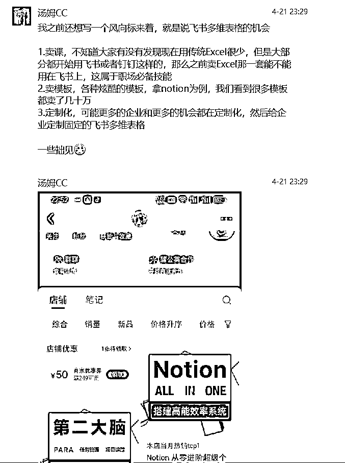
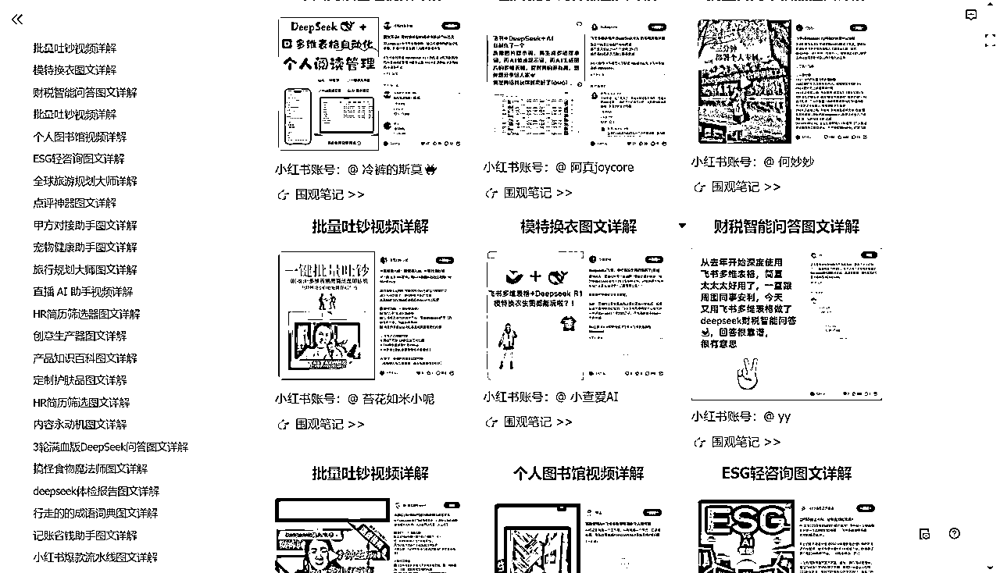
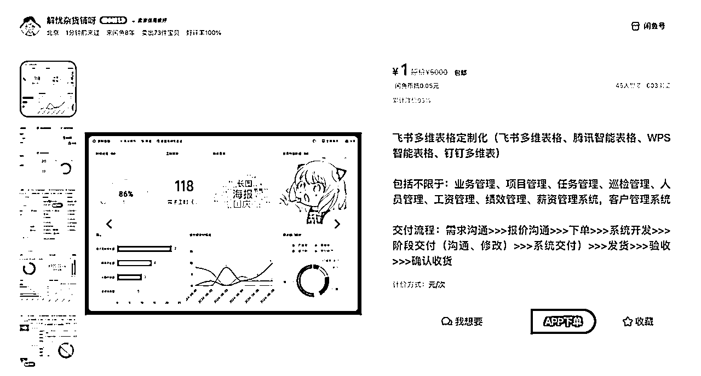

来源：https://lxs5t23nn0p.feishu.cn/docx/VopFdanWIotXdNxlbjzcGZSjnXG
大家好，我是书生，经过了3天的时间熬夜爆肝学习飞书多维表格之后写下了这篇文章，分享一些个人的浅显看法。
之前对飞书的了解，仅仅局限于一个较为方便的办公软件，契机源于亦仁在航海家群内分享一个聊天记录

亦仁认证的超级标，让我来了兴趣，于是开始尝试了解一下。
首先了解市场情况，小红书和闲鱼分别搜索了一下多维表格，发现有一些多维表格产品，且销量还不错，主要分为几大类
一是多维表格与ai结合的小产品，类似于与自动记账，文献速读，电子橱窗，小红书笔记数据采集等
二是多维表格搭建的团队或企业管理的自动化和工作流等模版，大的类似于胖东来，海底捞，小的类似于跨境电商-海外仓卖家管理，电商团队管理，KOL合作管理等
三是多维表格学习教程和培训，有飞书官方的，也有个人做的课程
四是多维表格定制搭建，包含ai结合的工作流和企业管理提效都有，飞书官方关于企业搭建的价格是4999
作为一个对多维表格没有任何了解的我，在简单了解完已有产品之后开始对多维表格产生了一定的兴趣，打开飞书，进入多维表格，结果看着新建的界面一头雾水，于是开始找教程学习。
在学完了多维表格从0-1的课程，了解了多维表格海量模版，并见识到了强大且复杂的工作流之后，确实对于我这个新手来说造成了一定的冲击，它不是表格，它可以是ERP、SCM、CRM、BPR、OMS、WMS 等企业管理系统，可以是和ai相结合之后的自动化工作流，也可以是很多个便捷的提效工具。
当然，可能因为我对于多维表格的了解还不够深入，或许它对比专业的管理系统来说还有一些功能不够完善，但是它的搭建门槛足够低，搭建成本足够低，那么它就非常适合中小企业和一些互联网团队，虽然单纯的ai工作流没有coze、RPA效果好，但是简单的非常容易上手，复杂点的也同样可以和coze、RPA相结合多方面的满足了开发需求。
针对小红书上面的一些产品，随机选中了一个简单点的——AI文献批量阅读神器，尝试了一下自己搭建，用时大概5个小时搭建完成，大体上的效果就是上传PDF、PPT、WORD等格式的文献，根据个人想要的维度，自动分析阅读并给出结果，同时可以建立自己的文献库，统计、筛选、查找所需要的内容。找有阅读文献需求的朋友了解了一下，的确能满足他一定的需求。
（电脑版视图）
（手机版视图）
类似的小产品非常容易搭建，且等同于一个简易app，有非常多的小需求可以相结合。
比如：旅行方面，输入旅行目的地、时间、人数、预算、要求，自动生成详细的旅行攻略，并且旅行结束之后上传旅行感悟生成自己专属的旅行记录
比如：阅读方面，输入要求，自动推荐书单，提供书籍解读，阅读记录，读书笔记等，并根据阅读情况生成自己的读书记录。
比如：面试方面，只需要批量上传简历，实现自动更新和简历拆解，并生成结构化评估结果，再根据评估结果和岗位排出面试的优先级
等等类似的每一个小需求都是一个小产品，搭建—测试—推广—完善—付费，产品闭环就有了，虚拟资料赛道是不是可以结合起来？如果测试的效果好，还可以进一步优化成小程序或者app，ai编程也结合起来了，甚至可以作为ai编程产品测试的一环。

如果大家ai编程有产品灵感，但是APP开发起来难度大、周期长、成本高、且不确定受众情况，这个方法可以作为一个验证产品或者说简易版产品开发的一个方式，目前多维表格里的Maker就是这么做的。
同时还可以和知识库相结合搭建社群，优秀的例子—通往AGI之路
ai赛道走出来了，那么有没有其他赛道可以按照这个模式重新来一遍呢？
当然还有一个知识付费方向，不管是Excel，还是PPT教学，都养活了很多团队，那么多维表格相比较上述两个软件，功能性更强，应用更广，难度更大，那么这个方向的教学应该也是一个赛道，而且不仅可以教个人，企业方面或许也会有需求。
比如你是极简生活博主，那么可以搭建一个断离舍的相关的物品个人物品管理系统，很明显，这个博主粉丝数量还不很低，空间还很大。（请看图1）
比如你是自律博主，那么可以搭建一个人生管理系统，很明显，这个博主也有很大的成长空间，不过人生管理系统小红书比较多的是Notion（请看图2）
比如你是自媒体博主，那么你可以搭建一个小红书爆款笔记采集，数据分析，选题、内容仿写等一体的小红书提效工具，当然，结合了ai，难度稍微大一点点（请看图3）
甚至你是咖啡博主，都可以搭建一个咖啡豆管理系统（请看图4），当然，如果你不知道做什么博主，你也可以成为一个飞书多维表格博主（请看图5、图6）
同理，穿搭博主可以搭建一个个人穿搭系统，职场博主可以搭建一个职场效率提升方面的系统，宠物博主可以搭建一个宠物看病系统等等等等，我暂时还没想到有什么博主不能往这个上面靠，这算是给每一个自媒体博主都增加了一个变现方式。
虽然官方有不少模版，但是，首先官方模版大多不够精致，其次官方模版涵盖类目不够广，且不够精细化，那么不管是卖细分领域的，还是全方向的，甚至可以把官方模版打包放一起卖，目测官方暂时还是鼓励态度。但是注意最好不要卖别人的模版，自己修改一下难度不大，需求一定是有的，非常容易上手，操作也很简单，就截图模版，再把图片排版的好看一点发内容即可，小红书和闲鱼平台一起尝试，正反馈来的非常快，上述和自媒体结合也属于卖模版的一种。
这个不用多说，参照Excel玩法即可，对标一找一大堆，按照做的好的对标拆解一下流程，模仿即可，虽然没有实操过，但是个人感觉市场还是很空白的，同时还可以卖官方直播课程，目前官方课程申请通过KOC合作，分佣力度很大，最重要的是目前暂时没有发现市面上有非常非常基础且详细的且成体系的关于多维表格的教程，有需求吗？就我个人而言，是非常有需求的，如果有这么一个课程，那么我完全能接受付费学习，官方的课程更多的还是处于普及多维表格的维度，而且知识点讲的过于单一。
可以面向企业搭建提效或者管理等体系，类似于什么一表管理整个公司的多模态管理系统，或者KOL达人管理系统等等，但是这个需要对多维表格了解的非常深入，以及部分可能还涉及到代码。也可以面向个人把各类模版销售变成私人定制即可，同时可以和coze，RPA等相结合，定制更复杂的ai工作流体系，玩法非常非常多，有实力的可以重点关注这个方向，小红书上已经发现有账号开始做投流了，专门接企业定制

4月26日，在西湖参加了飞书多维表格的一个活动，活动上有三个Maker分享了自己开发的产品，第一个是抖音博主全量短视频数据抓取，第二个是全链路新媒体信息采集，第三个是AI简历秒筛神器，相当于上文提到的小工具的优化版本，大多都结合了RPA的数据抓取功能与多维表格数据分析管理功能，这里有个关键点，飞书官方会给推广，我同样进了他们产品的飞书群，进行了体验，首先基础体验用户有了，然后可以根据基础体验用户的体感和需求进一步完善优化，直到初步成熟测试从免费迭代到付费的情况，一条龙解决。
和知识库相结合的社群玩法，参照通往AGI之路，感觉如果是类似于依托干货，通过海量的资料为框架组成社群应该会比较适合这个体系，飞书文档付费阅读和知识问答都在内测中。
以上就是个人对于飞书多维表格方面的浅显看法，目前自己也只是将将入门而已，需要学习的地方还很多，如果有对飞书多维表格体系变现感兴趣的宝子们，欢迎来链接，互相学习交流。
最后的最后感谢汤姆CC提供的灵感，感谢亦仁老大的分享